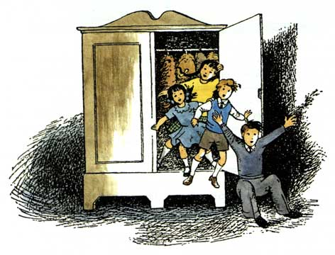

Wardrobe

Wardrobe is a simple object-oriented language that can be run within the browser. Primarily aimed at teaching children and teenagers to program, the language has been built with simplicity in mind. If you're interested why not give it a try or check out the docs.